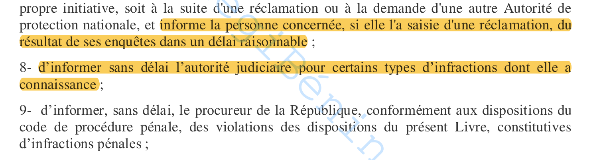
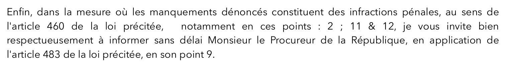
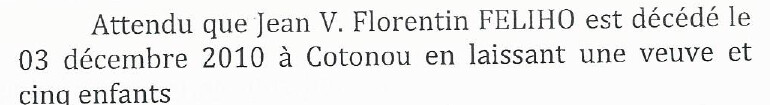
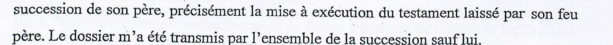
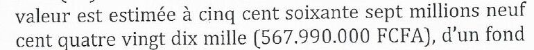
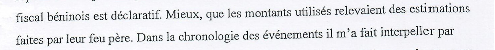
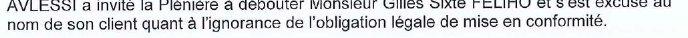

APDP · Bénin · Code du numérique · article 483, point 9
« SANS DÉLAI »
C'est ce que la loi impose à l'Autorité de protection des données pour informer le Procureur.
1 108 jours
depuis la plainte du 3 octobre 2023 · aucune décision notifiée au plaignant (au 15 octobre 2026)
Procureur informé ?
Aucune pièce.
Aucune pièce.
Loi n° 2017-20 · Code du numérique · article 483

Code du numérique, texte consolidé : article 483, points 7 à 9
Point 9 — « d'informer, sans délai, le procureur de la République […] des violations des dispositions du présent Livre, constitutives d'infractions pénales »
Sans délai.
La plainte du 2 octobre 2023

Plainte à l'APDP, 2 octobre 2023 : « informer sans délai Monsieur le Procureur de la République, en application de l'article 483 […] en son point 9 »
Gilles FÉLIHO demande à l'APDP d'informer le Procureur : article 483, point 9.
Accusé de réception n° 2023-1793 de l'APDP, 14 décembre 2023
14 déc. 2023 : « une suite vous sera donnée incessamment ».
Depuis : aucune décision notifiée.
Pièce 1 · La date du décès
LE CERTIFICAT · 20 octobre 2016 · décès :
10 juin 2016
LES PIÈCES OFFICIELLES · décès :

3 décembre 2010
Déclaration de décès (CNHU-HKM) · jugement n° 114/14 du 31 octobre 2014
Un décès ne peut pas dater de 2016 si un jugement de 2014 statue déjà sur la succession.
Pièce 2 · Le mandat

Le notaire Félix BALLEY, « mandataire » de Gilles FÉLIHO
Aucun mandat produit.

Lettre du notaire Félix BALLEY, 7 septembre 2023
Gilles FÉLIHO « n'est pas partie » à ses actes.

Procès-verbal d'audition du notaire Félix BALLEY, Brigade criminelle, 19 mars 2025
« Le dossier m'a été transmis par l'ensemble de la succession sauf lui. »
Pièce 3 · Les valeurs
LE CERTIFICAT
7 immeubles
138 300 000 FCFA
138 300 000 FCFA
LE JUGEMENT DE 2014

39 immeubles
567 990 000 FCFA
567 990 000 FCFA

Procès-verbal d'audition du notaire Félix BALLEY, Brigade criminelle, 19 mars 2025
« les montants utilisés relevaient des estimations faites par leur feu père »
Devant l'APDP · procès-verbal du 19 juin 2024
Le notaire Félix BALLEY, « l'accusé », selon le procès-verbal de l'APDP :

Tout vient de « la décision du tribunal ».
Son avocat, à l'audience :

« l'ignorance de l'obligation légale »
Le Procureur a-t-il été informé ?
Aucune pièce.
Aucune pièce.
13 → 16 décembre 2024
13 déc., 10 h 18 — Gilles FÉLIHO informe l'APDP, par courtoisie, du communiqué qu'il va publier.

Réponse de l'APDP, 16 décembre 2024, 7 h 58
2 jours 21 h 40
pour répondre au plaignant.
Pour le Procureur : aucune pièce.
Le plaignant y lit une menace.
Version publique · réalité du dossier
VERSION PUBLIQUE
Le service Contrôle et Contentieux de l'APDP a « traité 20 plaintes liées à des atteintes à la vie privée » en 2025.
Bénin Web TV, 3 juillet 2026
Le service Contrôle et Contentieux de l'APDP a « traité 20 plaintes liées à des atteintes à la vie privée » en 2025.
Bénin Web TV, 3 juillet 2026
CE DOSSIER
7 séances · délibéré le 19 décembre 2024
1 108 jours depuis la plainte · aucune décision notifiée
7 séances · délibéré le 19 décembre 2024
1 108 jours depuis la plainte · aucune décision notifiée
20 plaintes traitées…
et celle-ci ?
et celle-ci ?
Vous avez saisi une autorité sans jamais recevoir de décision ?
Racontez-le en commentaire.
wadagni2026-verite.com/apdp
Toutes les pièces sont en ligne
Ce film présente des pièces ; il n'impute aucune infraction. Droit de réponse : contact@eji2.org
Éthique Juridique 2.0 Internationale